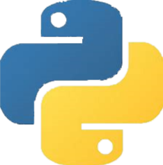

Ezen a weboldan röviden ismertetve vannak a programozással kapcsolatos alapfogalmak, ismeretek. Többek között az algoritmusokról, adattípusokról, programozási tételek és az egyes programozási nyelvek rövid imsertetéséről olvashatsz. Egyes helyeken részletesebb magyarázatért látogss el a hozzá fűzött oldalakra.
A program olyan megengedett utasítások sorozata, amelyet szeretnénk, hogy a számítógépünk végrehajtson.
Programkészítés folyamata
A programkészítés folyamata általában egy többlépcsős feladat, főleg boynolultabb programok megírásánál.
- Specifikáció: A legelső lépésben adjuk meg a bemenő, kimenő adatokat, és a hozzájuk tartozó kikötéseket (előfeltétel, utófeltétel). Tehát meghatározzuk a kezdő adatokat, értékhalmazukat, és az ebből következő kimenő adatokat, értékhalmazukat. Ezt a lépést röviden specifikációnak nevezzük.
- Tervezés: A tervezésnél választunk ki számos fontos dolgot. A fejlesztői környezetet amin szeretnénk írni a programunkat, és a programozási nyelvet amiben szeretnénk kódolni. Utolsósorban a legfontosabb a megfelelő algoritmus generlásása.
- Kódolás: Az általunk megválasztott programozási nyelven az algoritmusunkat követve, kódoljuk a programot.
- Tesztelés: Teszteljük a programot, hogy minden esetben működik - e, feltárjuk a lehetséges hibákat.
- Hibakeresés, hibajavítás: A teszteléskor talált, feltélezett lehetséges hibákat megpróbáljuk feltárni, feltérképezni, hol lehet, majd feltárjuk a lehetséges okokat és kijavítani a hibákat.
- Minőségvizsgálat, hatékonyság: Megvizsgáljuk, hogy a pogramunk forráskódja egyszerűbben is megholható. Jobbítható - e maga a program? Hogyan?
- Dokumentáció: Ebben a lépésben készítjük el a felhasználó számára, hogy hogyan lehet használni a programot, mire jó.
- Használat, karbantartás: Mint minden alkalmazást, szoftvert, programot az idők folyam folyamatosan frissíteni kell biztonsági, és technikai okok miatt, ugyanúgy ez nekünk is a felelősségünk, hogy lépést tartsunk az idővel, és folyamatosan frissítsük, karbantartsuk a programunkat.
Adattípusok
Egy adattípus az adatok azon halmazát jelöli ki, mely meghatározza az értelmezési tartományukat és a rajtuk elvégezhető műveleteket.
Elemi típus: Egy adattípus lehet elemi, melyet nem lehet tovább szétbontani.
- Konstans: Az értéke, állapota a program futása során nem változhat.
- Változó: A változó a neve is arra utal, hogy egy olyan adatot tároljunk benne ami a program futtatása során megváltoztathatja állapotát, értékét.
- Egész típus: Az egész számok és természetes számok halmaza. Aritmetikai és logikai műveletek végezhetők rajta, és a relációk.
- Valós típus: Ez a racionális számok halmaza. Aritmetikai és logikai műveletek végezhetők rajta, és a relációk.
- Logikai típus: Ez a hamis, vagy az igaz értékeket tartalmazhatja. A logikai műveletek végezhetők rajta, valamint csak az = és a nem = relációk.
- Karakter típus: Az ASCII kódtáblában tartalmazó karakterek halmaza. Értelemszerűen csak a rá értelmes műveletek végezhetők rajta.
Összetett típus: Az összetett típusok, az elemi típsuokból épülnek, így több, egyszerre más típusú adatot is tartalmazhatnak. Példál: rekord, halmaz, lista...
Ezen a weboldan röviden ismertetve vannak a programozással kapcsolatos alapfogalmak, ismeretek. Többek között az algoritmusokról, adattípusokról, programozási tételek és az egyes programozási nyelvek rövid imsertetéséről olvashatsz. Egyes helyeken részletesebb magyarázatért látogss el a hozzá fűzött oldalakra.
A program olyan megengedett utasítások sorozata, amelyet szeretnénk, hogy a számítógépünk végrehajtson.
Programkészítés folyamata
A programkészítés folyamata általában egy többlépcsős feladat, főleg boynolultabb programok megírásánál.
- Specifikáció: A legelső lépésben adjuk meg a bemenő, kimenő adatokat, és a hozzájuk tartozó kikötéseket (előfeltétel, utófeltétel). Tehát meghatározzuk a kezdő adatokat, értékhalmazukat, és az ebből következő kimenő adatokat, értékhalmazukat. Ezt a lépést röviden specifikációnak nevezzük.
- Tervezés: A tervezésnél választunk ki számos fontos dolgot. A fejlesztői környezetet amin szeretnénk írni a programunkat, és a programozási nyelvet amiben szeretnénk kódolni. Utolsósorban a legfontosabb a megfelelő algoritmus generlásása.
- Kódolás: Az általunk megválasztott programozási nyelven az algoritmusunkat követve, kódoljuk a programot.
- Tesztelés: Teszteljük a programot, hogy minden esetben működik - e, feltárjuk a lehetséges hibákat.
- Hibakeresés, hibajavítás: A teszteléskor talált, feltélezett lehetséges hibákat megpróbáljuk feltárni, feltérképezni, hol lehet, majd feltárjuk a lehetséges okokat és kijavítani a hibákat.
- Minőségvizsgálat, hatékonyság: Megvizsgáljuk, hogy a pogramunk forráskódja egyszerűbben is megholható. Jobbítható - e maga a program? Hogyan?
- Dokumentáció: Ebben a lépésben készítjük el a felhasználó számára, hogy hogyan lehet használni a programot, mire jó.
- Használat, karbantartás: Mint minden alkalmazást, szoftvert, programot az idők folyam folyamatosan frissíteni kell biztonsági, és technikai okok miatt, ugyanúgy ez nekünk is a felelősségünk, hogy lépést tartsunk az idővel, és folyamatosan frissítsük, karbantartsuk a programunkat.
Adattípusok
Egy adattípus az adatok azon halmazát jelöli ki, mely meghatározza az értelmezési tartományukat és a rajtuk elvégezhető műveleteket.
Elemi típus: Egy adattípus lehet elemi, melyet nem lehet tovább szétbontani.
- Konstans: Az értéke, állapota a program futása során nem változhat.
- Változó: A változó a neve is arra utal, hogy egy olyan adatot tároljunk benne ami a program futtatása során megváltoztathatja állapotát, értékét.
- Egész típus: Az egész számok és természetes számok halmaza. Aritmetikai és logikai műveletek végezhetők rajta, és a relációk.
- Valós típus: Ez a racionális számok halmaza. Aritmetikai és logikai műveletek végezhetők rajta, és a relációk.
- Logikai típus: Ez a hamis, vagy az igaz értékeket tartalmazhatja. A logikai műveletek végezhetők rajta, valamint csak az = és a nem = relációk.
- Karakter típus: Az ASCII kódtáblában tartalmazó karakterek halmaza. Értelemszerűen csak a rá értelmes műveletek végezhetők rajta.
Összetett típus: Az összetett típusok, az elemi típsuokból épülnek, így több, egyszerre más típusú adatot is tartalmazhatnak. Példál: rekord, halmaz, lista...
A programozáselméletben, az algoritmus vagy eljárás alatt olyan absztrakt, programozási nyelvtől független utásítások megengedett sorozatát értjük, melyet követünk a kódolás közben. Az algoritmus olyan mint egy recep főzéskor.
Jellemzői
- Legrövidebb
- Leghatékonyabb
- Programfüggetlen
Az algoritmus megalkotása során, az egyes tevékenyésgeket csoportosítani tudjuk, mivel nyelvtől független tulajdonsága miatt, a felesleges tevékenységeket ezzel elhadjuk.
Elemi tevékenységek
Ezek a program által azonnal véhgrehajtható műveletek. Három alapvető van közöttük, ezek a beolvasás, kiírás, értékadás. De például két szám összeadása is elemi tevékenység.
Vezérlőtevékenységek
Ezekkel vezérelhetjük, hogy a programunk milyen sorrendben, és hogyan hatjsa végre a tevékenységeket.
- Szekvencia: Egymás után végrehatja a tevékenységeket.
- Szelekció vagy elágazás: Feltételtől függően szelektál, azaz választ, és azt a tevékenyésget hatja végre amelyik felétele igaz. Feltételektől függően beszélhetünk, kétszeres, háromszoros, többszörös szelekcióról.
- Ciklus: Egy tevékenység többszöri végrhajtása. A ciklusoknak többféle válozata lehet. Van Elöltesztelő-, hátultesztelő ciklus, valamint növekményes-, és csökkenő ciklus.
- Alprogram: Ez egy összetett tevékenység. Gyakorlati céljából abban jó, hogy nek kelljen a forráskódban többször ugyanazt a kódot ismételgetni.
Algoritmusleíró eszközök
Az algoritmusoknak többfajta leíró eszközei vannak. Ezekkel valósíthatjuk meg az algoritmusunkat. A leggyakrabban használtak:
- Folyamatábra: Geometria alakzatokkal szemlélteti az egyes tevékenységeket, a nyíl pedig az irányt jelöli, tehát, hogy milyen irányban fut a program.

- Struktogram: Hasonló a folyamatábrához, viszont itt téglalapok jelölnek mindent, és a további tevékenységek is egymásba ágyazott téglalapok lesznek.
- Mondatszerű leírás: Ez már az előzőekhez hasonlóan szöveges leírást használ. Az emberi természetes nyelvet használja az algoritmus leírására. Törekedni kell, az egyértelműségre, pontosságra, tömörésgre.
- Pszeudokód: A forráskódhoz hasonlítható, ötvözi annak elemeit és a mondatszerű leírást.
A programozási tételek olyan absztrakt, általános típusfeladatoknak az algoritmusa, melyek majdnem minden esetben használhatók.
Összegzés: Adott tulajdonsággal rendelkező elemek értékének összege.
START
összeg=0
X=ℍN
T:X → 𝕃
Ciklus i=1-től N-ig
Ha T(Xi) igaz
akkor összeg=összeg+Xi
Ciklus vége
STOP
Megszámolás: Adott tulajdonsággal rendlekező elemek darabszámának a meghatározása, tehát, hogy hány van belőlük.
START
db=0
X=ℍN
T:X → 𝕃
Ciklus i=1-től N-ig
Ha T(Xi) igaz
akkor db=db+1
Ciklus vége
STOP
Maximum- és minimum kiválasztás: Adatok közül, a legnagyobb, illetve a legkisebb kiválasztása.
START
X=ℍN
maxÉrt=X1, maxIndex=1
Ciklus i=1-től N-ig
Ha maxÉrt>Xi
akkor maxÉrt=Xi, maxIndex=i
Ciklus vége
STOP
Eldöntés: Eldöntjük, hogy van - e az adatok között adott tulajdonságú elem.
START
X=ℍN
T:X → 𝕃
van=False
Ciklus amíg i≤N és nem van
Ha T(Xi)
akkor van=True
Ciklus vége
STOP
Kiválasztás: Hasonló kiválasztáshoz, csak itt tudjuk, hogy létezik egy ilyen elem, és ezt szeretnénk kiválasztani.
START
X=ℍN
T:X → 𝕃
Ciklus amíg nem T(Xi)
Ha T(Xi)
akkor Index=i, Ért=Xi
Ciklus vége
STOP
Keresés: Az eldöntésből és a kiválasztásból tevődik össze. Megkeressük, hogy van - e ilyen elem, ha van akkor végrehatjuk a kiválasztás algoritmusát.
START
X=ℍN
T:X → 𝕃
van=False
Ciklus amíg i≤N és nem van
Ha T(Xi)
akkor van=True
Ciklus vége
Ha van
akkor Ciklus amíg nem T(Xi)
Ha T(Xi)
akkor Index=i, Ért=Xi
Ciklus vége
STOP
Ugyanúgy mint a természetes nyelveknél, az idők folyamán nagyon sok programozási nyelv alakult ki. Amint a neve is sugallja, egy programozási nyelv egy adott programnak a forráskódjának a nyelvét értjük, amiben a program fejlesztője írta a programot. A programozási nyelveket is nagyon sok féle szempont alapján lehet csoportosítani. A két fő típus az alacsonyszíntű, és a magas-szintű nyelvek. Egy nyelv alacson szintű, ha a programozás közben jelentősen hardveres, és nem szoftveresen valósítjuk meg a programot. Napjainkban ezek a nyelvek már elavultak, és a helyüket átvetták a magas-szintű nyelvek, a könnyeb programozás érdekében. A magas-szintű nyelveknél nincs szükség hardveres beavatkozásra, a kódolás teljesen szoftveresen valósul meg. A magas-szintű nyelveknek a leggyakoribb típusai az Objektum Orientált, prototípus alapúak, és a szkript nyelvek, de vannak grafikai típusuak, melyekkel egy grafikus felületen is tudunk kódolni. Ezenkívül még ismeretes a struktúrált, és procedurális nyelvek.
| Nyelvek |
| Természetes | Mesterséges |
| Lekérdező |
Dokumentumleíró |
Programozási |
|
|
Alacsony szintű |
Magas szintű |
A leggyakrabban használt programozási nyelvek
 Python
A Python egy magas-szintű általános célú programozáis nyelv. Szintaxisa, és a típusfüggetlensége miatt ajánlott kezdő programozóknak.
 Javascript
Javascript
A Javascript prototípus alapú szkript nyelv, viszont támogatja az objektum orientáltságot. Javascript az alap szkript nyelve a Weboldalaknak, 2022 - es adatok alapján majdhogynem a weboldalak 99% - a használja a weboldalán a JavaScriptet. Ennek következtében ma már a Javascript az alapértelmezett szkript nyelv a HTML oldalaknak. Lentebb láthatsz is egy példát, a Javascriptre, de nyilván ennél jóval többet meg lehet valósítani.
 C tipusú nyelvek(C#,C++,C)
C tipusú nyelvek(C#,C++,C)
A C tipusú nyelvek nagyon erősen tipusos nyelvek, nagy részük pedig objektum orientált.